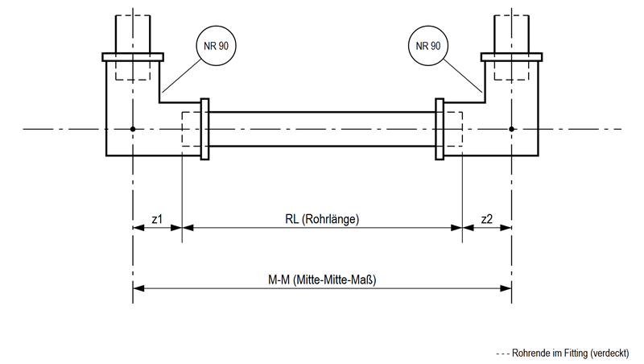
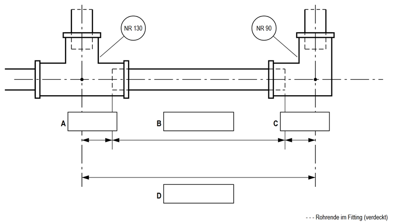
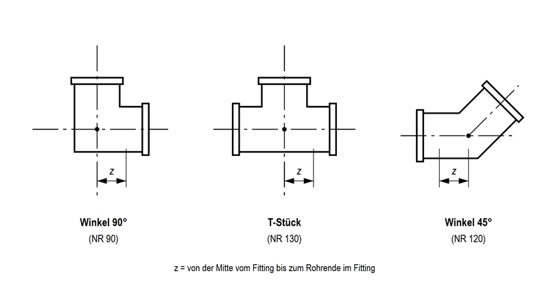
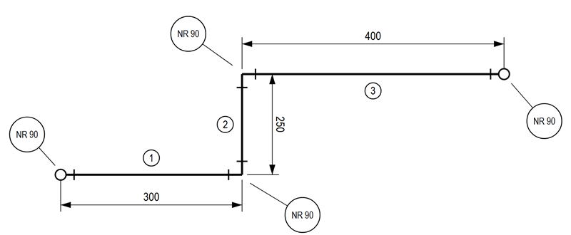
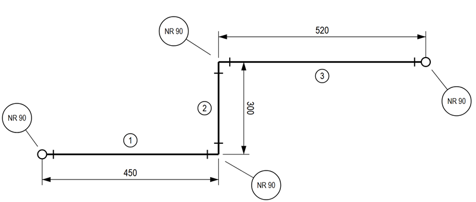
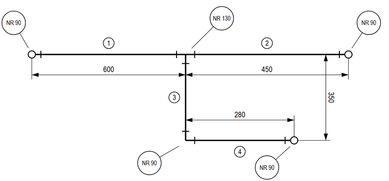
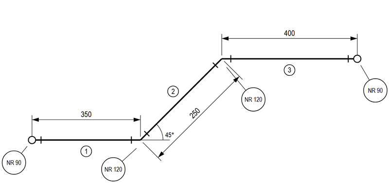

z-Maß, Materialauszug
Heute lernst du: wie lang du ein Rohr zwischen zwei Fittings schneiden musst, wie viel Rohr du bestellst und wie du einen Materialauszug schreibst.
So arbeitest du: Lies zuerst den grauen Infokasten. Mach dann die Aufgaben darunter. Die Antworten findest du im Infokasten. Fertig? Tippe bei jeder Aufgabe auf „Prüfen“. Bessere deine Fehler aus.
Die Kästen mit Strichellinie und ★★★ („Mehr wissen“ und „Vertiefung“) sind erweiterte Aufgabenstellungen.
Rechne Rohrlängen immer in mm. Nur beim Bestellen (Infokasten E) rechnest du in m. Schreib bei jeder Zahl die Einheit dazu.
Infokasten A: Wie lang ist das Rohr zwischen zwei Fittings? (z-Maß)
|
Fitting = Formstück, z. B. Winkel oder T-Stück. Das Rohr wird in den Fitting hineingeschraubt.  • M-M (Mitte-Mitte-Maß) = von der Mitte vom Fitting 1 bis zur Mitte vom Fitting 2. Dieses Maß steht im Plan. • z (z-Maß) = von der Mitte vom Fitting bis zum Rohrende im Fitting. • RL (Rohrlänge) = so lang schneidest du das Rohr ab. Das Rohr geht nicht bis zur Mitte vom Fitting. Darum ist das Rohr kürzer als das M-M. Merke: Rohrlänge = Mitte-Mitte-Maß minus z1 minus z2. |
Aufgabe 1 ★ leicht – Beschrifte die Skizze
Links ist hier ein T-Stück, rechts ein Winkel.
Lies Infokasten A. Welcher Begriff gehört zu A, B, C und D? Tipp die Nummer vom Begriff in das Feld.
Diese Begriffe gibt es: 1 M-M – 2 RL – 3 z1 – 4 z2

| A | B | C | D |
|---|---|---|---|
Aufgabe 2 ★ leicht – Erkläre es mit einem Satz
Ein Lehrling fragt: „Warum schneide ich das Rohr nicht einfach so lang wie das M-M?“
Lies Infokasten A. Kreuze die richtige Antwort an.
Das Rohr ist kürzer als das M-M, weil …
| das Rohr beim Schneiden kürzer wird. | |
| das Rohr bei Wärme länger wird. | |
| das Rohr nur in den Fitting hineingeschraubt wird. Es geht nicht bis zur Mitte vom Fitting. |
Infokasten B: Wie groß ist das z-Maß? (z-Maß-Tabelle)
|
Gewinderohre verbindet man mit Fittings aus Temperguss (Gusseisen, das durch langes Glühen zäh wird. Es bricht nicht so leicht wie normales Gusseisen.). Jeder Fitting hat eine Nummer, z. B. NR 90 = Winkel 90°. Diese Nummer steht im Katalog, auf der Bestellung und in der Skizze.  z-Maße für Temperguss-Fittings mit Innengewinde (alle Maße in mm)
So liest du die Tabelle: Such die Zeile mit deinem Fitting. Geh nach rechts zur Spalte mit deiner DN. Merke: Das z-Maß hängt vom Fitting und von der Größe DN ab. |
Aufgabe 3 ★ leicht – Die z-Maß-Tabelle
Lies Infokasten B. Schreib die fehlenden z-Maße in die Tabelle.
| Fitting | DN 15 | DN 20 | DN 25 | DN 32 |
|---|---|---|---|---|
| Winkel 90° (NR 90) | 15 mm | 21 mm | ||
| T-Stück (NR 130) | 18 mm | |||
| Winkel 45° (NR 120) | 9 mm | 14 mm |
Kreuze an.
| Ein Winkel 90° und ein T-Stück mit gleicher DN haben … | das gleiche z | ein anderes z |
| Ein größeres Rohr (größere DN) hat … | ein größeres z | ein kleineres z |
Infokasten C: So rechnest du die Rohrlänge (Formel)
|
RL = M-M − z1 − z2 So rechnest du: 1. Lies das M-M in der Skizze ab (in mm). 2. Schau, welcher Fitting an jedem Rohrende ist, und welche DN das Rohr hat. 3. Such z1 und z2 in der Tabelle (Infokasten B). 4. Rechne: M-M minus z1 minus z2. Beispiel: Rohr DN 15, links ein Winkel, rechts ein Winkel, M-M = 205 mm z1 = 15 mm z2 = 15 mm RL = 205 mm − 15 mm − 15 mm = 175 mm Achtung: Bei jedem Rohr ziehst du zwei z-Maße ab: eines für jedes Rohrende. |
Aufgabe 4 ★ leicht – Rechne die Rohrlänge
Lies Infokasten C. Such z1 und z2 in der Tabelle. Rechne die Rohrlänge RL aus. Tipp nur die Ergebnisse ein (mit Einheit mm).
a) Rohr DN 20, links ein Winkel 90°, rechts ein Winkel 90°, M-M = 340 mm
| z1 = | |
| z2 = | |
| RL = |
b) Rohr DN 25, links ein Winkel 90°, rechts ein Winkel 90°, M-M = 480 mm
| z1 = | |
| z2 = | |
| RL = |
c) Rohr DN 32, links ein T-Stück, rechts ein Winkel 90°, M-M = 750 mm
| z1 = | |
| z2 = | |
| RL = |
Aufgabe 5 ★★ mittel – Fehler finden
Ein Lehrling hat gerechnet. Alle Rohre haben links und rechts einen Winkel 90°. Nicht alles stimmt.
Kreuze an: richtig (R) oder falsch (F). Ist es falsch, tipp das richtige Ergebnis ein (mit mm). Ist es richtig, lass das Feld leer.
| Rechnung vom Lehrling | R | F | richtig ist |
|---|---|---|---|
| DN 25, M-M 600 mm: RL = 600 mm − 21 mm = 579 mm | |||
| DN 32, M-M 900 mm: RL = 900 mm − 26 mm − 26 mm = 848 mm | |||
| DN 20, M-M 450 mm: RL = 450 mm − 15 mm − 15 mm = 420 mm | |||
| DN 15, M-M 320 mm: RL = 320 mm + 15 mm + 15 mm = 350 mm |
Infokasten D: Wie liest du eine Leitungsskizze? (Positionsnummern)
|
Eine Leitung hat mehrere Rohre. In der Skizze sieht das so aus:  • Dicke Linie = Rohr. Die Rohre sind nummeriert: Kleiner Kreis mit Zahl = Rohr Nummer 1, 2, 3 … (Positionsnummer) • Großer Kreis mit NR = der Fitting an dieser Stelle, z. B. NR 90 = Winkel 90° • Kurzer Querstrich = hier ist das Rohr in den Fitting geschraubt. • Offener kleiner Kreis am Ende = Die Leitung geht dort nach vorne (z. B. zur Wand). Dort sitzt auch ein Winkel. • Maßzahl = das M-M in mm, von Fitting-Mitte bis Fitting-Mitte. So rechnest du eine ganze Leitung: Für jedes Rohr eine Zeile. Am Schluss zählst du alle Rohrlängen zusammen. Beispiel (Skizze oben, DN 15, alle Fittings Winkel 90°, z = 15 mm): Rohr 1: RL = 300 mm − 15 mm − 15 mm = 270 mm Rohr 2: RL = 250 mm − 15 mm − 15 mm = 220 mm Rohr 3: RL = 400 mm − 15 mm − 15 mm = 370 mm Rohrlänge gesamt = 270 mm + 220 mm + 370 mm = 860 mm |
Aufgabe 6 ★★ mittel – Eine Leitung mit 3 Rohren
Trinkwasserleitung aus Gewinderohr DN 20, verzinkt. Alle Fittings sind Winkel 90° (NR 90).

Lies Infokasten D. Rechne die Rohrlänge von jedem Rohr. Zähl dann alle zusammen. Tipp nur die Ergebnisse ein (mit mm).
| z = | |
| Rohr 1: RL = | |
| Rohr 2: RL = | |
| Rohr 3: RL = | |
| gesamt = |
Aufgabe 7 ★★ mittel – Zeichne die Skizze selbst
Dein Chef beschreibt eine Leitung DN 20. Alle Fittings sind Winkel 90° (NR 90).
• Rohr 2 ist von Fitting-Mitte bis Fitting-Mitte 250 mm lang (M-M). An beiden Enden sitzt ein Winkel 90°.
b) Rechne die Rohrlänge von Rohr 2. Tipp das Ergebnis ein (mit mm).
| Rohr 2: RL = |
Infokasten E: Wie viel Rohr bestellst du? (Verschnitt)
|
Beim Schneiden und Gewindeschneiden geht immer etwas Rohr verloren. Das nennt man Verschnitt. Darum bestellst du 10 % mehr Rohr. Gewinderohr bekommst du in Stangen zu 6 m. So rechnest du: 1. Rohrlänge gesamt in m umrechnen (1000 mm = 1 m). 2. Verschnitt: 10 % = Rohrlänge gesamt · 10 : 100 3. Bestellen = Rohrlänge gesamt + Verschnitt. Runde auf 2 Kommastellen. 4. Stangen = Bestellen : 6 m. Immer aufrunden! Eine halbe Stange kann man nicht kaufen. Beispiel: Rohrlänge gesamt = 7400 mm = 7,40 m Verschnitt = 7,40 m · 10 : 100 = 0,74 m Bestellen = 7,40 m + 0,74 m = 8,14 m Stangen = 8,14 m : 6 m = 1,36 → aufrunden: 2 Stangen Merke: Beim Bestellen gibst du 10 % dazu und rundest die Stangen immer auf. |
Aufgabe 8 ★★ mittel – Wie viele Stangen?
Lies Infokasten E. Rechne in Schritten. Gewinderohr gibt es in Stangen zu 6 m. Tipp nur die Ergebnisse ein.
a) Die Leitung von Aufgabe 6: Rohrlänge gesamt = 1162 mm.
| in m = | |
| Bestellen (2 Kommastellen) = | |
| Stangen = |
b) Eine große Leitung: Rohrlänge gesamt = 13,40 m
| Verschnitt = | |
| Bestellen = | |
| Stangen = |
c) Rohrlänge gesamt = 5,60 m. Ein Kollege sagt: „Das ist weniger als 6 m. Eine Stange reicht.“
Stimmt das? Rechne nach und kreuze an.
| Bestellen = |
| 1 Stange reicht | ich brauche 2 Stangen |
Aufgabe 9 ★★ mittel – Eine Leitung mit T-Stück
Trinkwasserleitung aus Gewinderohr DN 25, verzinkt. In der Mitte ist ein T-Stück (NR 130), sonst Winkel 90° (NR 90).

a) Rechne die Rohrlänge von jedem Rohr und zähl zusammen. Tipp nur die Ergebnisse ein (mit mm).
| z = | |
| Rohr 1: RL = | |
| Rohr 2: RL = | |
| Rohr 3: RL = | |
| Rohr 4: RL = | |
| gesamt = |
b) Wie viel Rohr bestellst du? Wie viele Stangen?
| Bestellen (2 Kommastellen) = | |
| Stangen = |
c) Zähl die Fittings in der Skizze.
| Fitting | Stück |
|---|---|
| Winkel 90° (NR 90) | |
| T-Stück (NR 130) |
Aufgabe 10 ★★ mittel – Eine Leitung mit Winkel 45°
Gewinderohr DN 15. Die Leitung macht einen Versatz: Sie weicht schräg aus, zum Beispiel um ein Hindernis. Dafür gibt es zwei Winkel 45° (NR 120). Am Anfang und am Ende sitzt ein Winkel 90° (NR 90).

Achtung: An den Rohrenden sitzen verschiedene Fittings. Such für jedes Ende das richtige z in der Tabelle.
Rechne die Rohrlängen und zähl zusammen. Tipp nur die Ergebnisse ein (mit mm).
| Rohr 1: RL = | |
| Rohr 2: RL = | |
| Rohr 3: RL = | |
| gesamt = |
Infokasten F: Was schreibst du auf die Bestellung? (Materialauszug)
|
Im Materialauszug steht alles, was du für eine Leitung brauchst. Damit bestellt der Chef beim Großhandel (Firma, die Rohre und Fittings an Installateure verkauft). Ein Materialauszug hat 3 Spalten: • Stk. / lfm = wie viel: Fittings in Stück (Stk.), Rohr in Laufmeter (lfm) • Dimension = wie groß, z. B. DN 20 • Bezeichnung = was genau, z. B. Winkel 90° (NR 90), Temperguss verzinkt Rohr: Du bestellst ganze Stangen. 1 Stange Gewinderohr = 6 lfm, 2 Stangen = 12 lfm. Beispiel (Leitung von Infokasten D: 1 Stange Rohr DN 15, 4 Winkel):
|
Aufgabe 11 ★ leicht – Schreib den Materialauszug
Die Leitung von Aufgabe 9 (DN 25), Gewinderohr verzinkt: 1 Stange Rohr, 4 Winkel 90°, 1 T-Stück.
Lies Infokasten F. Füll den Materialauszug aus. Tipp bei Menge und DN nur die Zahl ein. Bei der Bezeichnung tippst du den Buchstaben.
Bezeichnungen: A Gewinderohr mittelschwer, verzinkt – B NR 90, Temperguss verzinkt – C NR 120, Temperguss verzinkt – D NR 130, Temperguss verzinkt
Achtung: 1 Bezeichnung bleibt übrig.
| Menge | Einheit | DN | Bezeichnung |
|---|---|---|---|
| lfm | |||
| Stk. | |||
| Stk. |
Reihenfolge: zuerst das Rohr, dann die Winkel, dann das T-Stück.
Infokasten F2: Wie heißen Kunststoff-Fittings im Katalog? (Katalognummer)
|
Kunststoff-Fittings im Katalog: Auch bei Kunststoffrohren steht jeder Fitting mit Nummer im Katalog. Beispiel: KELEN (Rohre aus PP-RCT, ein Kunststoff, sie werden geschweißt). Die Rohre gibt es in Stangen zu 4 m. Die Dimension ist der Außendurchmesser d, z. B. 20 = 20 mm.
So steht es im Materialauszug (Beispiel: 2 Stangen Rohr und 10 Winkel, d = 20 mm):
|
Aufgabe 12 ★★ mittel – Bestellung aus dem KELEN-Katalog
Für eine Kunststoffleitung d = 20 mm brauchst du: 6 Winkel 90°, 2 T-Stücke, 3 Muffen und 9 m Rohr (Stangen zu 4 m).
Füll den Materialauszug aus. Tipp bei Menge und Dimension nur die Zahl ein. Bei der Bezeichnung tippst du den Buchstaben.
Bezeichnungen: A KE10 KELEN PP-RCT – B KE20 KELEN PP-RCT – C KE30 KELEN PP-RCT – D KE70 KELEN PP-RCT – E KELEN PP-RCT Rohr
Achtung: 1 Bezeichnung bleibt übrig. Tipp Rohr: 9 m : 4 m = ? Immer aufrunden. Dann: Stangen · 4 m = lfm.
| Menge | Einheit | Dimension | Bezeichnung |
|---|---|---|---|
| lfm | |||
| Stk. | |||
| Stk. | |||
| Stk. |
Reihenfolge: zuerst das Rohr, dann Winkel, T-Stücke, Muffen.
Aufgabe 13 ★★★ schwer – Reststücke im Lager
|
Im Lager liegt ein Reststück Gewinderohr DN 20 (ein Stück Rohr, das von einer anderen Baustelle übrig ist). Es ist 1,15 m lang. Du brauchst die drei Rohre von Aufgabe 6. Tipp zuerst die drei Rohrlängen aus Aufgabe 6 ein (mit mm).
a) Reicht das Reststück für alle drei Rohre? Rechne und kreuze an.
b) Welche zwei Rohre schneidest du aus dem Reststück, damit möglichst wenig übrig bleibt? Kreuze an. Wie viel bleibt übrig?
c) Ein anderes Reststück DN 20 ist genau 500 mm lang. Es soll ganz zwischen zwei Winkel 90° passen. Wie groß muss das M-M sein? Tipp: Rechne rückwärts. M-M = Rohr + z1 + z2.
|
Aufgabe 14 ★★ mittel – Fachbegriffe
Fachbegriffe sind die Wörter, die man auf der Baustelle verwendet.
Welcher Fachbegriff passt zur Erklärung? Tipp den Buchstaben in das Feld.
Diese Fachbegriffe gibt es: A Fitting – B Gefälle – C Laufmeter – D Materialauszug – E Meterriss – F Mitte-Mitte-Maß – G Positionsnummer – H Rohrlänge RL – I Stange – J Temperguss – K Verschnitt – L z-Maß
Achtung: 2 Fachbegriffe bleiben übrig. Tipp: Lies die Infokästen A bis F.
| Erklärung | Buchstabe |
|---|---|
| Formstück, z. B. Winkel oder T-Stück. Das Rohr wird hineingeschraubt. | |
| Abstand von der Mitte von einem Fitting bis zur Mitte vom nächsten Fitting. | |
| Abstand von der Mitte vom Fitting bis zum Rohrende im Fitting. | |
| Rohr, das beim Schneiden verloren geht. Dafür bestellt man 10 % mehr. | |
| Zähes Gusseisen (geglüht). Daraus sind die Fittings für Gewinderohre. | |
| Zahl im kleinen Kreis in der Skizze. Damit sind die Rohre nummeriert. | |
| So kauft man Gewinderohr: ein Stück mit 6 m. | |
| Liste mit allem, was man für eine Leitung bestellt. | |
| So lang schneidet man das Rohr ab: M-M minus z1 minus z2. | |
| So viele Meter Rohr stehen auf der Bestellung (lfm). |
Aufgabe 15 ★★★ schwer – Fachbegriffe auf Englisch
Wie heißt der Fachbegriff auf Englisch? Tipp den Buchstaben vom englischen Wort in das Feld.
Diese Wörter gibt es: A bill of materials – B centre – C elbow – D length – E pipe – F socket – G tap – H tee – I thread – J threaded pipe – K valve – L waste
Achtung: 2 Wörter bleiben übrig.
| Deutsch | Englisch | Deutsch | Englisch |
|---|---|---|---|
| Rohr | Länge | ||
| Winkel | Mitte | ||
| T-Stück | Verschnitt | ||
| Muffe | Materialauszug | ||
| Gewinde | Gewinderohr |
Fertig? Tippe bei jeder Aufgabe auf „Prüfen“. Bessere deine Fehler aus.